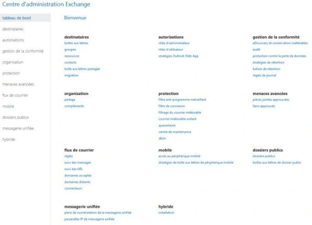
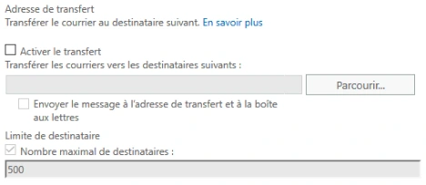
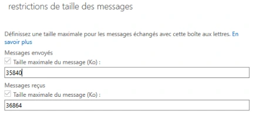
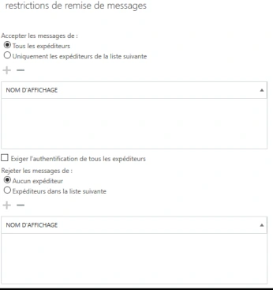
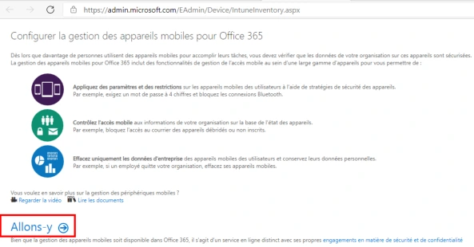
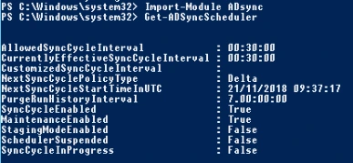
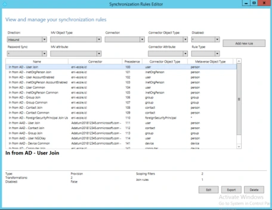
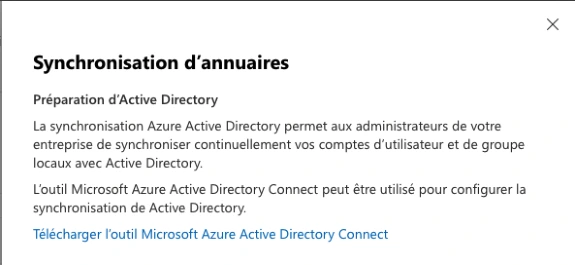
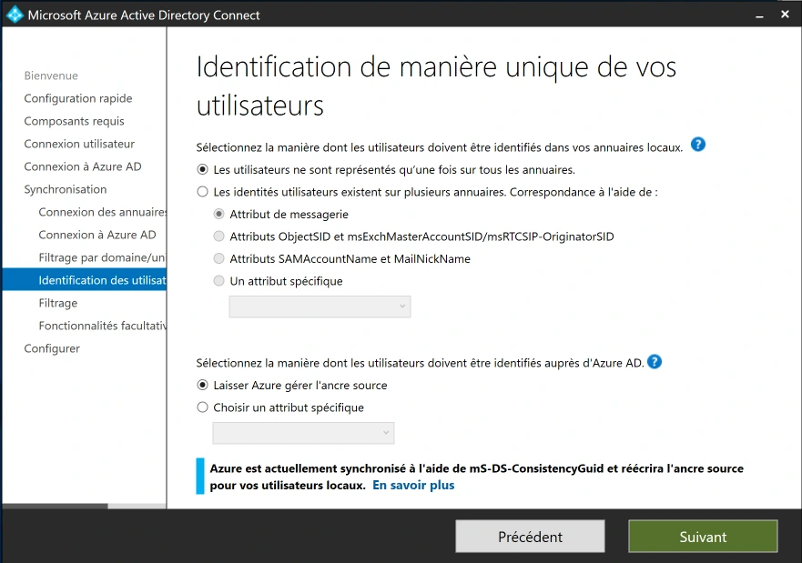
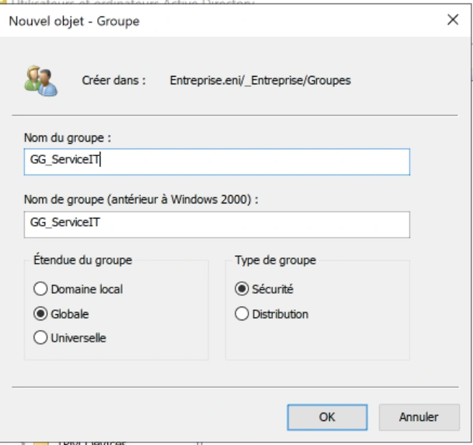

Module 02 — Administration Microsoft 365¶
La transcription du support Drive et l’aide pédagogique sont séparées pour rendre leur provenance explicite.
SOURCE DRIVE · TRANSCRIPTION DU SUPPORT
Le contenu des documents du dossier TSSR est transcrit ci-dessous, page par page. Les textes et tableaux sont intégrés à la page Web. Aucun fichier PDF, aucune diapositive entière ni aucune reproduction de page n’est affiché. Seuls des croquis ou visuels isolés et vérifiés peuvent accompagner la transcription. Les versions et les consignes restent celles des supports de formation. Les compléments IA sont conservés dans leur onglet distinct.
Support · Module 02 - Support de cours · 45 pages transcrites
Transcription du document source. Les parcours et libellés historiques sont conservés. Les mots de passe, codes de validation et coordonnées nominatives sont neutralisés. Les noms de domaine d’accès des exemples utilisent des domaines réservés à la documentation.
Module 02 – Administration Microsoft 365
Objectifs
- Créer et gérer des objets dans la console Microsoft 365
- Gérer des licences Microsoft 365
- Comprendre les connexions clientes
- Synchroniser un annuaire local vers le Cloud
Groupes et utilisateurs
Microsoft 365
Groupes et utilisateurs Microsoft 365
La console web Microsoft 365
L’écran d’accueil
Groupes et utilisateurs Microsoft 365
L’Admin Center
Dashboard
Groupes et utilisateurs Microsoft 365
Les différents types de comptes
- Utilisateur Microsoft 365
- L’utilisateur n’existe que dans Microsoft 365
Galettes.lcl
- Un utilisateur synchronisé
- Créé dans un AD DS local
- Géré par un AD DS local
- Mot de passe peut être synchronisé
Serveur AD Serveur DNS
Azure AD
Groupes et utilisateurs Microsoft 365
Les différents types de comptes
Méthode de création • Un par un dans l'Admin Center • Plusieurs utilisateurs avec un fichier .csv • En PowerShell • Synchronisé via Azure AD Connect
Groupes et utilisateurs Microsoft 365
Création d’un utilisateur O365
Bonne idée de s'envoyer le nouveau compte avec le nouveau mot de passe !
- Choisissez un domaine pour l'adresse mail
- Sélectionnez un emplacement
- Plus vous renseignerez d'informations sur le contact et plus votre gestion sera granulaire
- Vous pouvez :
- Soit laisser O365 générer un mot de passe
- Soit créer votre propre mot de passe
Groupes et utilisateurs Microsoft 365
Création d’un utilisateur O365
- Différents rôles peuvent être attribués à un nouvel utilisateur
- Utilisateur simple
- Administrateur général
- Administrateur personnalisé
- Délégation via les RBAC (Role Based Access Control)
Groupes et utilisateurs Microsoft 365
Création d’un utilisateur O365
Administrateur personnalisé
Une stratégie de délégation doit être bien pensée.
Groupes et utilisateurs Microsoft 365
Se connecter en PowerShell
1. Installer le module nécessaire MSOnline
2. Vérifier que le module est bien installé
Groupes et utilisateurs Microsoft 365
Se connecter en PowerShell
$acctName="<UPN of the account, such as belindan@domaine-labo-9.example>" $orgName="<for example, litwareinc for locataire-labo.onmicrosoft.example>" #Azure Active Directory Connect-MsolService #SharePoint Online Connect-SPOService -Url https://$locataire-labo.sharepoint.com #Skype for Business Online Import-Module MicrosoftTeams Connect-MicrosoftTeams #Exchange Online Import-Module ExchangeOnlineManagement Connect-ExchangeOnline -UserPrincipalName $acctName -ShowProgress $true #Security & Compliance Center Connect-IPPSSession -UserPrincipalName $acctName #Teams Import-Module MicrosoftTeams Connect-MicrosoftTeams
Commandes de connexion affichées
Install-PackageProvider -Name NuGet -MinimumVersion 2.8.5.201 -Force
Connect-MsolService
Connect-SPOService -Url "https://locataire-labo.sharepoint.com"
Import-Module MicrosoftTeams
Connect-MicrosoftTeams
Import-Module ExchangeOnlineManagement
Connect-ExchangeOnline -UserPrincipalName $acctName -ShowProgress $true
Connect-IPPSSession -UserPrincipalName $acctNameGroupes et utilisateurs Microsoft 365
Se connecter en PowerShell
3. Se connecter à Microsoft 365
Cette fenêtre s'ouvre. Renseigner nom d'utilisateur : votreprénom@locataire-labo.onmicrosoft.example
4. Vérifier si vous êtes connecté
Groupes et utilisateurs Microsoft 365
Création d’un utilisateur O365
- Créer un nouvel utilisateur
New-MsolUser -UserPrincipalName jpetit@domaine-labo-4.example -DisplayName Jean Petit -FirstName Jean - LastName Petit -Password fourni par le formateur -ForceChangePassword $true -UsageLocation fr
- Supprimer un utilisateur, il sera gardé dans la corbeille Azure AD pendant 30 jours
Remove-MsolUser –UserPrincipalName "jpetit@domaine-labo-4.example"
- Restaurer un utilisateur de la corbeille
Restore-MsolUser –UserPrincipalName "jpetit@domaine-labo-4.example"
Création, suppression et restauration dans la capture
New-MsolUser -UserPrincipalName jpetit@example.com -DisplayName "Jean Petit" -FirstName Jean -LastName Petit
Remove-MsolUser -UserPrincipalName "jpetit@example.com"
Restore-MsolUser -UserPrincipalName "jpetit@example.com"Gestion des licences
Les fonctionnalités Exchange Online
- Boîtes aux lettres et archivage
- Calendrier
- Visualisation et modification de pièces jointes online
- Dossiers publics
- Stratégie de message et de conformité
- Antivirus et antispam
- Configuration du flux de messagerie
- Gestion d'appareils mobile
- Déploiement hybride
- Outils de migration
Gestion des licences Les plans Exchange Online
M365 Business
Fonctionnalité Exchange Online
Exchange Online Plan 1
Exchange Online Plan 2
Basic
Standard
Premium M365 E3 M365 E5
Boîte aux lettres
100 Go + Archivage
50 Go + 50 Go d’archivage
100 Go + Archivage illimité
50 Go + 50 Go d’archivage
illimité
Idem Business
Pack Office Idem Business
Premium
Moins de sécurité que
Ensemble des fonctionnalités
Services supplémentaires
M365 + VOIP
Business Premium
inclus
Coût 3,40 € /m 6,70 € /m 4,20 € /m 10,50 € /m 16,90 € /m 31,50 € /m 53,70 € /m
Gestion des licences
- Vous pouvez :
- Ajouter une licence
- Remplacer une licence
- Nombre de licences restantes :
- Nombre de licences utilisées
- Nombre d'utilisateurs sans licence
Vous devez sélectionner obligatoirement un emplacement !
| Fonctionnalité Exchange Online | Exchange Online Plan 1 | Exchange Online Plan 2 | M365 Business Basic | M365 Business Standard | M365 Business Premium | M365 E3 | M365 E5 |
|---|---|---|---|---|---|---|---|
| Boîteaux lettres | 50 Go + 50 Go d’archivage | 100 Go + Archivage illimité | 50 Go + 50 Go d’archivage | 50 Go + 50 Go d’archivage | 50 Go + 50 Go d’archivage | 100 Go + Archivage illimité | 100 Go + Archivage illimité |
| Pack Office | Idem Business Premium | Idem Business Premium | |||||
| Services supplémentaires | Moins de sécurité que Business Premium | Ensemble des fonctionnalités M365 + VOIP inclus | |||||
| Coût | 3,40 € /m | 6,70 € /m | 4,20 € /m | 10,50 € /m | 16,90 € /m | 31,50 € /m | 53,70 € /m |
Gestion des licences
La gestion Exchange Online
- Vous pouvez gérer Exchange Online
- Dans le menu Centres d'administration / Exchange Online
- En PowerShell
- Pour vous connecter en PowerShell à Exchange Online
Find-module ExchangeOnlineManagement | install-module Connect-ExchangeOnline
Gestion des licences
- Vérifier son nombre de licences totales et consommées
L’accountSkuId est nécessaire pour toutes les manipulations de licences.
- Assigner une licence à un utilisateur
Set-MsolUserLicense –UserPrincipalName "jpetit@domaine-labo-4.example" –AddLicenses "locataire-labo:ENTERPRISEPREMIUM"
- Enlever une licence à un utilisateur
Set-MsolUserLicense –UserPrincipalName "jpetit@domaine-labo-4.example" –RemoveLicenses "locataire-labo:ENTERPRISEPREMIUM"
- Assigner une licence à tous les comptables suisses
Get-MsolUser -all -Department Account -UsageLocation CH -UnlicensedUsersOnly | ForEach- Object {Set-MsolUserLicense -UserPrincipalName $PSITEM.UserPrincipalName -AddLicenses " locataire-labo:ENTERPRISEPREMIUM "}
Commandes de gestion des licences dans les captures
Find-Module ExchangeOnlineManagement | Install-Module
Connect-ExchangeOnline
Get-MsolAccountSku
Set-MsolUserLicense -UserPrincipalName "jpetit@example.com" -AddLicenses "locataire-labo:ENTERPRISEPREMIUM"
Set-MsolUserLicense -UserPrincipalName "jpetit@example.com" -RemoveLicenses "locataire-labo:ENTERPRISEPREMIUM"
Get-MsolUser -All -Department Account -UsageLocation CH -UnlicensedUsersOnly | ForEach-Object { Set-MsolUserLicense -UserPrincipalName $PSItem.UserPrincipalName -AddLicenses "locataire-labo:ENTERPRISEPREMIUM" }Destinataires et permissions
Exchange Online
Destinataires et permissions Exchange Online La console Exchange Online ECP (Exchange Control Panel)


Destinataires et permissions Exchange Online
Les différents types de destinataires
lucie@domaine-labo-4.example
Boîtes aux lettres Utilisateur • Envoi / Réception de mails • Attribution de stratégies • Gestion des restrictions • Gestion des redirections • Délégations
Destinataires et permissions Exchange Online
Les fonctionnalités d’une boîte aux lettres
Options de remise • Ces options sont applicables à tous les types de destinataires


Destinataires et permissions Exchange Online
Les fonctionnalités d’une boîte aux lettres
Restriction de taille des messages et de remise de message.
Destinataires et permissions Exchange Online
Les fonctionnalités d’une boîte aux lettres
Les adresses de courrier
- Éviter de les modifier ici
Les Infos courrier apparaissent lors de la création d'un nouveau message




Destinataires et permissions Exchange Online
Les fonctionnalités d’une boîte aux lettres
Gestion IMAP4 et POP3 • Cela veut dire que vous autorisez ou non l'accès à vos utilisateurs par n'importe quel programme prend en charge les protocoles POP et IMAP • Type : Outlook, Outlook Express, Thunderbird, Eudora • Si vous utilisez ces protocoles, vous ne pourrez plus accéder à : • Vos calendriers • La gestion des contacts • … • Dans le cadre de messagerie M365 ou Exchange, peu d’intérêt d’utiliser ces protocoles
Destinataires et permissions Exchange Online
Les fonctionnalités d’une boîte aux lettres
Quota • Contrairement à un Exchange sur site, la gestion des quotas se fait uniquement en PowerShell
Get-Mailbox jpetit@domaine-labo-4.example | fl *quota*
- Paramétrer un avertissement à 49 Gb, un arrêt des envois de courriel à 49,5 Gb et un arrêt des envois/réceptions à 50 Gb
Set-Mailbox –Identity "Jean Petit" –IssueWarningQuota 49gb –ProhibitSendQuota 49.5gb –ProhibitSendReceiveQuota 50gb –UseDatabaseQuotaDefaults $false
Lecture et paramétrage des quotas dans la capture
Get-Mailbox jpetit@example.com | fl *quota*
Set-Mailbox -Identity "Jean Petit" -IssueWarningQuota 49gb -ProhibitSendQuota 49.5gb -ProhibitSendReceiveQuota 50gb -UseDatabaseQuotaDefaults $falseDestinataires et permissions Exchange Online
Les fonctionnalités d’une boîte aux lettres
- Durée de rétention des éléments supprimés pour une boîte aux lettres
Get-Mailbox jpetit@domaine-labo-4.example | fl *retain*
- Paramétrer la durée de rétention des éléments supprimés pour 30 jours
Set-Mailbox –Identity "Jean Petit" –RetainDeletedItemsFor 30
- Lister les boîtes aux lettres supprimées présentes dans la corbeille
Get-Mailbox -SoftDeletedMailbox
Destinataires et permissions Exchange Online
Les différents types de destinataires
- Boîte aux lettres de ressources
- Boîte aux lettres de salle
- Permet de gérer les demandes de réservation d'un emplacement physique
New-Mailbox –Name "votre nom de salle" –DiplayName "votre nom de salle" -Room
- Boîte aux lettres d'équipement
- Permet de gérer les demandes de réservation d'un matériel physique
New-Mailbox –Name "vidéoproj_1" –DiplayName "vidéoproj_1" -equipment
Rétention et boîtes de ressources dans les captures
Set-Mailbox -Identity "Jean Petit" -RetainDeletedItemsFor 30
Get-Mailbox -SoftDeletedMailbox
New-Mailbox -Name "votre nom de salle" -DisplayName "votre nom de salle" -Room
New-Mailbox -Name "vidéoproj_1" -DisplayName "vidéoproj_1" -EquipmentDestinataires et permissions Exchange Online
Les différents types de destinataires
Demande de réunion
- Boîte aux lettres de salle
- Boîte aux lettres de ressource
- Option d’invitation
Destinataires et permissions Exchange Online
Les différents types de destinataires
- Boîte aux lettres partagées
- Plusieurs utilisateurs peuvent accéder à une Boîte aux lettres partagée
- Gain de licence (attention à bien respecter les CGU…)
- Possibilité de fixer un mot de passe (accès smartphone)
- Attention aux délégations
- « Accès total » permet aux utilisateurs de voir les messages
- « Envoyer en tant que » permet d'envoyer des messages en tant que cette boîte aux lettres
- Attention à la gestion des mails (éléments envoyés)
New-Mailbox –Shared –Name "support" –DiplayName "support" –Alias "support" | Set-Mailbox –GrantSendOnBehalfTo jpetit@domaine-labo-4.example | Add-MailboxPermission –User "Jean Petit" –AccesRights FullAccess –InheritanceType All
Exemples de boîte partagée et de délégation dans la capture
New-Mailbox -Shared -Name "support" -DisplayName "support" -Alias "support"
Set-Mailbox -GrantSendOnBehalfTo jpetit@example.com
Add-MailboxPermission -User "Jean Petit" -AccessRights FullAccess -InheritanceType AllLes deux fragments de délégation affichés dans la capture omettent l’identité de la boîte cible.
Destinataires et permissions Exchange Online
Les différents types de destinataires
- Les contacts
- C'est un type de boîte aux lettres avec une adresse de messagerie externe
- Cela permet d'enregistrer, des fournisseurs par exemple, dans les carnets d'adresses
- Les utilisateurs de messagerie
- Tout comme les contacts, ils ont une adresse de messagerie externe
- Contrairement aux contacts, ils peuvent s'authentifier sur une session (par exemple, une société de service)
Destinataires et permissions Exchange Online
Les fonctionnalités d’une boîte aux lettres
- Conservation pour litige
- Désactivé par défaut
- Liée à un aspect juridique, elle permet de conserver les éléments d'une boîte aux lettres et enregistre les modifications apportées à ces éléments
- Archivage
- Permet d'activer une boîte aux lettres d'archive
Destinataires et permissions Exchange Online Résumé : les différents types de destinataires
Boîte aux lettres d’utilisateur Fonction
Boîte aux lettres Exchange Online Boîte aux lettres créée avec tout compte Microsoft 365 ayant une licence.
Boîte aux lettres de ressource Boîte aux lettres de salle ou d’équipement qui permet de gérer un calendrier.
Boîte aux lettres partagées Plusieurs utilisateurs peuvent accéder à une Boîte aux lettres (une seule copie du mail).
Boîte aux lettres de contact C'est un type de boîte aux lettres avec une adresse de messagerie externe (ex : pour un fournisseur).
Boîte aux lettres d’utilisateurs de messagerie
C'est un type de boîte aux lettres avec une adresse de messagerie externe mais contrairement aux contacts, ils peuvent s'authentifier sur une session (par exemple, une société de service).
Boîte aux lettres de groupe Fonction
Liste de distribution ou groupe Outlook Permet d'envoyer des messages à un groupe de destinataires (plusieurs copies du mails).
Liste de distribution dynamique Comme la liste de distribution, permet d'envoyer des messages à un groupe de destinataires (plusieurs copies du mails) mais ce groupe est créé suivant une requête LDAP.
Groupe de sécurité à extension de courrier Il permet d'accorder des accès à des ressources tout en ayant une adresse de messagerie.
Les groupes
| Boîte aux lettres d’utilisateur | Fonction |
|---|---|
| Boîte aux lettres Exchange Online | Boîte aux lettres créée avec tout compte Microsoft 365 ayant une licence. |
| Boîte aux lettres de ressource | Boîte aux lettres de salle ou d’équipement qui permet de gérer un calendrier. |
| Boîte aux lettres partagées | Plusieurs utilisateurs peuvent accéder à une Boîte aux lettres (une seule copie du mail). |
| Boîte aux lettres de contact | C'est un type de boîte aux lettres avec une adresse de messagerie externe (ex : pour un fournisseur). |
| Boîte aux lettres d’utilisateurs de messagerie | C'est un type de boîte aux lettres avec une adresse de messagerie externe mais contrairement aux contacts, ils peuvent s'authentifier sur une session (par exemple, une société de service). |
| Boîte aux lettres de groupe | Fonction |
|---|---|
| Liste de distribution ou groupe Outlook | Permet d'envoyer des messages à un groupe de destinataires (plusieurs copies du mails). |
| Liste de distribution dynamique | Comme la liste de distribution, permet d'envoyer des messages à un groupe de destinataires (plusieurs copies du mails) mais ce groupe est créé suivant une requête LDAP. |
| Groupe de sécurité à extension de courrier | Il permet d'accorder des accès à des ressources tout en ayant une adresse de messagerie. |
Gestion des licences
Les différents groupes dans Microsoft 365
- Groupe Microsoft 365
- Collaboration entre utilisateurs
- Gestion dynamique possible par une règle LDAP Azure AD
- Boîte de réception Outlook partagée
- Un calendrier partagé
- Une bibliothèque de documents SharePoint
- Un planificateur
- Un bloc-notes OneNote
- Groupe de distribution
- Envoi de mail à un groupe de personnes
- Groupe de sécurité
- Gestion de droit sur des ressources SharePoint
Les groupes Les différents types de groupes
La création d’un groupe Microsoft 365 créé un site SharePoint
Les groupes
Les différents types de groupes
- Groupe Microsoft 365
Les groupes
Les différents types de groupes
- Liste de distribution
Les groupes
Les différents types de groupes
- Liste de distribution dynamique
Administrer Exchange Online
Administrer Exchange Online
Les domaines acceptés
- Il s'agit d'un domaine dans le sens DNS.
- Il permet aux utilisateurs de ce domaine d'envoyer et recevoir des messages pour ce domaine DNS.
- Il en existe 2 types :
- Faisant autorité : c'est un domaine géré par votre office 365.
- Relais interne : le courrier peut être relayé par vos serveurs, mais vous aurez alors besoin des connecteurs de réception et d'envoi.
Administrer Exchange Online
Le suivi des messages
- En tant qu'administrateur, il peut vous être demandé d'effectuer un suivi des messages
Administrer Exchange Online
Les règles de transport
- Vous pouvez implémenter des stratégies et de la conformité de messagerie en appliquant des règles de transport aux messages
- Les règles de transport :
- Limitent les flux de messages
- Modifient le contenu des messages en transit
- Empêchent les utilisateurs spécifiés d'échanger des courriers électroniques avec d'autres utilisateurs définis
- Bloquent tout contenu inapproprié entrant ou sortant
- Peuvent contourner les règles de filtrage antispam
- Permettent de suivre ou journaliser les messages échangés avec certaines personnes
- Redirigent les messages entrants ou sortants pour les examiner avant leur remise
Administrer Exchange Online
Les règles de transport
- Leurs caractéristiques :
- Appliquées par les serveurs de boîte aux lettres
- Appliquer les exigences de conformité
- Leurs configurations :
- Conditions (les attributs, en-têtes, destinataires, expéditeurs ou autres parties du message électronique)
- Actions
- Exceptions
Administrer Exchange Online
Les règles de transport
- Les conditions et exceptions peuvent se chevaucher et ainsi créer des règles que vous ne souhaitez pas (modifier ou supprimer des messages)
- La priorité et l’ordre des règles sont capitaux à la bonne application de vos contraintes de conformité
- La règle en haut de liste est traitée en premier (priorité 0)
- Utiliser les expressions régulières pour vérifier le contenu des messages
- Recherche d’un numéro de téléphone du type « \d\d\d(-|.)\d\d\d\d »
Administrer Exchange Online
Les connecteurs
- Par défaut, aucun connecteur ne sera à créer, votre messagerie est fonctionnelle.
- Les connecteurs auront de multiples fonctions :
- Faire le lien avec un serveur Exchange On Premise
- Autoriser des sites web, copieurs, logiciels à envoyer de mails à partir de votre entreprise
- D’appliquer un comportement différent en fonction du ou des domaines cibles (application de chiffrement par exemple)
- Accepter du courrier entrant d’une organisation partenaire
Administrer Exchange Online
Les connecteurs
- L’une des utilisations les plus communes est d’utiliser un relais SMTP en interne :
- Simplifier la configuration des équipements (authentification non obligatoire en interne)
- Limiter le nombre de machines pouvant exploiter le protocole SMTP et ainsi limiter la surface d’attaque
- Établir une configuration sécurisée entre votre relais SMTP interne et Microsoft 365 (pas toujours possible sur les équipements)
- Limiter le nombre d’entrées dans le SPF
Relais SMTP illustré
| Emplacement | Éléments ou indications |
|---|---|
| Réseau de votre organisation | Imprimante multifonction ou périphérique (par exemple, numérisation vers la messagerie), service Web hébergé localement (par exemple, un service de paie), site Web hébergé localement (par exemple, un site intranet des RH) |
| Internet | Smtp.office365.com sur le port 587. Authentification à l’aide des informations d’identification de boîte aux lettres Office 365. |
| Destinataires | Vos boîtes aux lettres Office 365. Message envoyé à des destinataires externes, extérieurs à votre société. |
Connectivité des clients de messagerie
Connectivité des clients de messagerie
Prérequis pour l’infrastructure réseau
- Ports et protocoles
- Assurez-vous que tous les ports sont bien ouverts
Le port 25 (SMTP) est très souvent bloqué par les FAI (Fournisseur d’Accès Internet).
Protocole Port non sécurisé Port TLS/SSL HTTP 80 443 POP3 110 995 IMAP4 143 993 MAPI / HTTPS 443 ActiveSync / HTTPS 443 SMTP 25 Soumission client SMTP 2525 587 / 465
Connectivité des clients de messagerie
Quelles connexions choisir ?
- Les connexions IMAP et POP sont de plus en plus rarement utilisées avec Microsoft 365 mais restent possibles.
- Les clients Outlook utiliseront MAPI/HTTPS.
- Les clients mobiles utiliseront ActiveSync.
| Protocole | Port non sécurisé | Port TLS/SSL |
|---|---|---|
| HTTP | 80 | 443 |
| POP3 | 110 | 995 |
| IMAP4 | 143 | 993 |
| MAPI / HTTPS | 443 | |
| ActiveSync / HTTPS | 443 | |
| SMTP | 25 | |
| Soumission client SMTP | 2525 | 587 / 465 |
Connectivité des clients de messagerie
Autodiscover
- Découverte automatique du serveur de messagerie
- « Tester la configuration automatique de la messagerie » permet de valider vos paramètres Autodiscover pour la configuration automatique des profils.
- Vous pouvez aussi utiliser le Remote Connectivity Analyser Tool.
- Il doit exister des enregistrements dans votre zone DNS publique pour les clients externes.
Pour Outlook
Enregistrement DNS Valeur
CNAME Alias : Autodiscover Cible : autodiscover.outlook.com
En cas d'utilisation de AD
Alias : Autodiscover.service.domaine-labo-4.example
FS (optionnel)
Cible : autodiscover.outlook.com
CNAME
Connectivité des clients de messagerie
Rappel Autodiscover
- Processus de la découverte automatique
- L'utilisateur entre son adresse mail à l'ouverture d'Outlook
- Outlook cherche puis se connecte au serveur de messagerie de l’utilisateur
- Le client envoie son adresse SMTP pour avoir les options de configuration de cette adresse
- Un fichier .xml est téléchargé par le client avec les paramètres du serveur
- Outlook se connecte au serveur Exchange Online dans Office 365 et peut recevoir ses mails
SMTP
Internet
web.xml
Micheline@domaine-labo-1.example MAPI/HTTPS
Serveur de messagerie de Micheline
| Enregistrement DNS | Valeur |
|---|---|
| CNAME | Alias : Autodiscover Cible : autodiscover.outlook.com |
| En cas d'utilisation de AD FS (optionnel) CNAME | Alias : Autodiscover.service.domaine-labo-4.example Cible : autodiscover.outlook.com |
| Micheline@domaine-labo-1.example | |
|---|---|
| Micheline@domaine-labo-1.example |
Connectivité des clients de messagerie
Les fichiers Outlook .pst, .ost et spscoll.dat
- .pst « Personal Storage Table » : fichier contenant les informations pour un compte POP3 par exemple.
- .ost « Offline Storage Table » : fichier contenant vos données lorsque vous êtes hors connexion pour les comptes IMAP4 et Exchange.
- .nst est l’extension des fichiers GST « Group Storage Table » : fichier contenant les conversations de groupe.
- spscoll.dat « Outlook Social Connector » : fichier qui contient les adresses mail suggérées lors de l’écriture d’une adresse (ouverture possible avec notepad).
Connectivité des clients de messagerie
Réparer les fichiers .pst, .nst et .ost
- Utilisation de l’outil natif au système pour les .pst : scanpst.exe
- Supprimer le .ost afin qu’il soit régénéré
- Utilisation d’outil tiers comme :
Gestion des mobiles
EMM (Enterprise Managing Mobile)
- Gestion des appareils mobiles de l’entreprise
- Représente une suite de service qui permet de gérer les appareils mobiles et la sécurité des données
- Différents acteurs du marché :
Gestion des mobiles
Managing Mobile Devices
- MDM
- Ce service représente 16,29 milliards de dollars de CA en 2020.
- Module de gestion des appareils mobiles.
- Mobile
- Tablette
- Smartphone
- Permet de gérer :
- Les applications
- Le réseau
- Les données
- La sécurité
Gestion des mobiles
BYOD, CYOD et COPE
- BYOD (Bring Your Own Device)
- Les utilisateurs peuvent utiliser les matériels personnels pour le travail.
- Permet une meilleure productivité puisqu’ils connaissent déjà le fonctionnement.
- Diminution des coûts pour l’entreprise (possibilité de prise en charge de tout ou partie des coûts d’achat et de maintenance).
- CYOD (Choose Your Own Device)
- Les utilisateurs peuvent choisir un modèle parmi une liste préétablie par l’entreprise.
- Permet d’éviter un parc de matériels trop hétérogène.
- COPE (Corporate Owned Personally Enabled)
- Les utilisateurs utilisent le matériel choisi par l’entreprise, mais ils peuvent l’utiliser à des fins personnelles.
- Ils peuvent installer les applications qu’ils veulent, mais la gestion reste à l’entreprise.
Gestion des mobiles
Managing Mobile Devices dans Microsoft 365
- MDM pour Microsoft 365 permet de gérer des appareils mobiles.
- Windows phone
- Android
- iPhone et iPad
- Pour une gestion avancée des appareils mobiles pour un domaine personnalisé, des enregistrements DNS sont nécessaires.
Enregistrement DNS Valeur
CNAME Hôte : EnterpriseEnrollment Adresse : EnterpriseEnrollment.manage.microsoft.com
CNAME Hôte : EnterpriseRegistration Adresse : EnterpriseRegistration.windows.net
Gestion des mobiles
Managing Mobile Devices dans Microsoft 365
- Activer la gestion mobile
https://admin.microsoft.com/EAdmin/Device/IntuneInventory.aspx
| Enregistrement DNS | Valeur |
|---|---|
| CNAME | Hôte : EnterpriseEnrollment Adresse : EnterpriseEnrollment.manage.microsoft.com |
| CNAME | Hôte : EnterpriseRegistration Adresse : EnterpriseRegistration.windows.net |


Gestion des mobiles
Managing Mobile Devices
- Une fois activé, vous pouvez créer une stratégie
Gestion des mobiles
Managing Mobile Devices
- Options de stratégie
- Empêcher les mots de passe simples
- Longueur minimale de mot de passe
- Nombre d'échecs avant effacement de l'appareil
- Temps d'inactivité avant verrouillage
- Expiration du mot de passe et historique
- Exiger le chiffrement de l'appareil
- Bloquer ou autoriser l'accès à un appareil
Gestion des mobiles
Managing Mobile Devices
- Options de stratégie
- Bloquer la synchronisation de photos
- Bloquer la capture d'écran
- Bloquer ou gérer l'accès au magasin d'application
- Bloquer la connexion au stockage amovible
Gestion des mobiles
Managing Mobile Devices
- Appliquez la stratégie au groupe de sécurité
Azure AD
Présentation
- C'est un service cloud de gestion des identités et des annuaires
- Il est utilisé par Microsoft 365 pour identifier les utilisateurs
- Vous pourrez :
- Gérer des utilisateurs
- Gérer des appareils
- Vous connecter à un domaine Active Directory local
Azure AD
Authentification
- Indépendant de votre Active Directory local
- Nécessite 2 mots de passe gérés dans 2 annuaires différents :
- 1 compte Active directory local
- 1 compte Azure AD dans Office 365
Galettes.lcl
Serveur AD Serveur DNS
Azure AD
Azure AD Connect
- Azure AD Connect va permettre de faire une synchronisation entre Microsoft 365 et votre AD DS On-Premise
- Tous les attributs utilisateurs, groupes ou contacts modifiés, désactivés ou supprimés dans votre AD sur site seront modifiés dans Microsoft 365
- Vous pouvez filtrer sur votre forêt, un domaine, une OU, un attribut…
Azure AD Azure AD Connect
Après avoir installé Azure AD Connect, les utilisateurs de votre AD local
sont synchronisés avec Azure AD dans le cloud.
Serveur AD Serveur DNS
Azure AD
Connect
Azure AD
Galettes.lcl
Azure AD Authentification Cloud avec mot de passe hashé
Azure AD Connect récupère les mots de passe hashés puis les envoie dans Azure AD en SHA256 afin de les synchroniser. Un utilisateur peut ainsi s’identifier dans le cloud avec son mot de passe AD local
Avec la méthode d’authentification Cloud, la synchronisation ne se fait que de l’AD local vers Azure AD Office 365.
Serveur AD Serveur DNS
Azure AD
Connect
Mot de passe hashé en SHA256
Azure AD
Galettes.lcl
Azure AD Azure AD Writeback (réécriture du mot de passe)
Avec Azure Ad Writeback, la synchronisation se fait dans les deux sens.
Nécessite Azure AD premium P1 ou Business Premium.
Serveur AD Serveur DNS
Azure AD
Connect
Mot de passe hashé en SHA256
Azure AD
Galettes.lcl
Azure AD
Azure AD Connect
- La synchronisation entre votre Office 365 et votre AD DS se fait toutes les 30 minutes par défaut
Planificateur affiché dans PowerShell
Import-Module ADSync
Get-ADSyncScheduler
AllowedSyncCycleInterval : 00:30:00
CurrentlyEffectiveSyncCycleInterval : 00:30:00
NextSyncCyclePolicyType : Delta

Azure AD
Azure AD Connect
1. Créez un nouveau suffixe UPN dans votre Active Directory
- Puis remplacez le suffixe UPN pour chaque utilisateur dans votre AD DS
Azure AD
Azure AD Connect
- Créez un compte de service pour la synchronisation • Il est indispensable de dédier un compte à la synchronisation AD, comme pour tout service. • L’utilisation de comptes génériques ou des comptes administrateur est à bannir des pratiques
- Limite la possibilité de réinitialisation de mots de passe (impacts larges et souvent mal maîtrisés qui entraîneront des interruptions de service)
- Permet d’avoir un mot de passe dédié par service et donc de renforcer la sécurité : un compte compromis ne donnera pas accès à l’ensemble des services de l’entreprise
- Pour une délégation fine, référez-vous à cet article :
https://docs.microsoft.com/fr-fr/azure/active-directory/hybrid/reference-connect-accounts-permissions
Azure AD
Azure AD Connect
4. Utilisez l’assistant d’installation
5. Utilisez l'utilisateur créé avec votre tenant
- Utilisez un compte de service administrateur de l’entreprise
Azure AD Azure AD Connect
Début de la synchronisation
Azure AD vérifie si votre domaine est routable sur internet
Azure AD
Azure AD Connect
- Vérifiez dans votre Admin Center que vos utilisateurs sont bien synchronisés
- Attention, vos utilisateurs n'ont pas encore de licences assignées
Azure AD
Azure AD Connect
- Des outils de gestion sont mis à votre disposition dans les applications du serveur sur lequel vous avez installé AzureADConnect.msi
- Azure AD Connect
- Relancer la configuration
- Synchronization Rules Editor
- Gérer les règles de synchronisation
- Synchronization Service
- Vérifier l'état de votre synchronisation
- Synchronization Service Web
- Lancer la console Web Service Configuration Tool
Azure AD
Synchronization Service Manager
- Opérations
- Vous pouvez voir le statut de vos dernières synchronisations
Azure AD
Synchronization Rules Editor
- Cette console permet de créer des règles de synchronisation spécifiques
- Vous pouvez modifier ou créer de nouvelles règles
- Attention lorsque vous modifiez les règles par défaut


Azure AD
Forcer une synchronisation AD Connect
- Lancer la réplication initiale
Start-ADSyncSyncCycle -PolicyType Initial
- Lancer une réplication différentielle
Start-ADSyncSyncCycle -PolicyType Delta
RBAC
Commandes de synchronisation affichées
Start-ADSyncSyncCycle -PolicyType Initial
Start-ADSyncSyncCycle -PolicyType DeltaRBAC
Délégation de privilèges
- Pour une gestion fine de l’attribution de droits d’administration Exchange, il existe une console nommée RBAC (Role Based Access Control)
- Basé sur des rôles prédéfinis, vous pourrez attribuer à des utilisateurs ou techniciens des privilèges pour administrer la partie Exchange Online de Microsoft 365
- L’affectation de permissions devra se faire au travers de comptes administrateurs spécifiques et avec le principe du privilège minimum
Gestion des licences
| Nom dans l’admin center de Office365 | Nom dans PowerShell | Rôle |
|---|---|---|
| Administrateur général | Company administrator | Il a accès à toutes les fonctionnalités. Celui qui a acheté Microsoft 365 a ce rôle par défaut. Ne donnez pas ce rôle à tout le monde. |
| Administrateur de facturation | Billing administrator | Il effectue les achats, gère les abonnements et les tickets support. Il surveille l'état des services. |
| Administrateur de mot de passe | Helpdesk administrator | Il réinitialise les mots de passe. Il gère les tickets support et surveille l'état des services. |
| Administrateur de service | Service support administrator | Il gère les tickets support et surveille l'état des services. |
| Administrateur de gestion des utilisateurs | User account administrator | Il créé et supprime des utilisateurs et des groupes, réinitialise les mots de passe, gère les tickets support et surveille l'état des services. |
Gestion des licences
Les différents rôles administrateur Microsoft 365
Quelques commandes PowerShell
Quels sont les rôles
Get-MsolRole
Quels sont les rôles assignés à un utilisateur
Get-MsolUserRole
Add-MsolRoleMember
Ajouter des membres à un rôle
remove- MsolRoleMember
Supprimer des membres à un rôle
RBAC
Délégation de privilèges
- Chaque rôle possède une liste d’actions
RBAC
Rôles personnalisés
Créez vos propres rôles
- Dans le centre d’administration Exchange, ouvrir Rôles, puis Rôles d’administrateur.
- Choisir Ajouter un groupe de rôles.
- Dans Configurer les informations de base, renseigner le nom. Le support montre « Rôle personnalisé ».
- Dans Autorisation, sélectionner les rôles à attribuer au groupe.
- Dans Affecter des administrateurs, rechercher les membres par nom ou par adresse de courriel.
Référence du document : 1D_WQ8CSn6GRFx1z-cJiwJT2TLAV6_Y4y · SHA-256 2d6cbe49ac253b8c…
Énoncé · M2 - Énoncé du TP 1 - Utilisateurs et groupes · 3 pages transcrites
Transcription du document source. Les parcours et libellés historiques sont conservés. Les mots de passe, codes de validation et coordonnées nominatives sont neutralisés. Les noms de domaine d’accès des exemples utilisent des domaines réservés à la documentation.
Utilisateurs et groupes
TP 01 du Module 02 – Administration Microsoft 365
Avant de démarrer ce TP, il convient d’avoir suivi les vidéos des modules 1 et 2 et d’avoir réalisé les TP proposés.
Enoncé
Objectifs
Créer des utilisateurs et des groupes dans Microsoft 365 suivant l’annexe 1 Prérequis
- Avoir une connexion internet Principales tâches à réaliser
Créez des utilisateurs Microsoft 365 sans affecter de licence.
- Créez un utilisateur Zachary Ramablag avec comme nom de connexion Zachary et comme pays le Canada, fonction Formateur, service Pédagogie.
Notez son mot de passe temporaire.
- Créez un utilisateur Vishnou Lapaix avec comme nom de connexion Vishnou et comme pays les USA, fonction Formateur, service Pédagogie.
Notez son mot de passe temporaire.
- Créez un utilisateur Oussama Lairbon avec comme nom de connexion Oussama et comme pays la France, fonction Cuisinier, service Restauration.
Notez son mot de passe temporaire.
- Créez un utilisateur en PowerShell Sacha Touille avec comme nom de connexion Sacha et comme pays le Japon, fonction Cuisinier, service restauration, comme mot de passe fourni par le formateur et il doit changer son mot de passe à la prochaine connexion.
- Connectez-vous avec cet utilisateur.
Que constatez-vous ?
Comment pourriez-vous régler ce problème ? Faites-le.
- Connectez-vous avec cet utilisateur.
Notez son nouveau mot de passe.
- Créez un utilisateur en PowerShell Lab Eni avec comme nom de connexion labeni et comme pays la France, fonction Administrateur, service Informatique, comme mot de
passe fourni par le formateur, lui ajouter le rôle administrateur global.
- Changez la fonction de Oussama Lairbon en chef cuisinier
- Supprimer Vishnou Lapaix.
- Vérifiez qu’il est bien dans les utilisateurs supprimés puis restaurez-le.
- Supprimez Sacha Touille en PowerShell puis restaurez-le en PowerShell.
- Assignez une licence complète à Oussama Lairbon.
- Assignez une licence complète en PowerShell à Zachary Ramablag
- En PowerShell assignez une licence à Sacha sans Sway, Power BI, Azure Rights Management.
- Assignez une licence à Vishnou Lapaix sans Office Online.
- Vérifiez en vous connectant à son compte.
- Réactivez Office Online pour Vishnou Lapaix.
- Créez les groupes Microsoft 365 GO_Restauration, GO_Commercial, GO_Infirmerie, GO_Informatique, GO_RH, GO_CE, GO_Pedagogie, GO_Moyens_Generaux, GO_Comptabilite, GO_Commercial, GO_Communication, GO_Secretaire, GO_Service_Achats, GO_Adminstratifs et GO_Direction avec une description pour chaque groupe.
- Mettez chaque utilisateur dans son groupe de service et votre compte de tenant dans le service et le groupe informatique et administrateur comme fonction.
- Mettez Vishnou Lapaix membre de Pédagogie, Deration Mo dans le groupe CE , Yves Remord dans le groupe commercial.
- Créez un groupe de sécurité nommé jedemolet avec comme membres : Zachary Ramablag, Vishnou Lapaix, Oussama Lairbon, Sacha Touille.
- Ajoutez le rôle « administrateur de mot de passe » à Vishnou Lapaix.
- Connectez-vous en tant que Vishnou Lapaix et envoyez un mail au groupe Pédagogie.
Vérifiez que vous le recevez bien.
- Restez connecté en tant que Vishnou Lapaix et réinitialisez le mot de passe de Zachary Ramablag.
- Réinitialisez le mot de passe de Oussama Lairbon en PowerShell.
- Ajoutez le rôle « Administrateur de licence » à Oussama Lairbon en PowerShell.
Annexe 1
| nom | Prénom | GROUPES | login | service | fonction | pays |
|---|---|---|---|---|---|---|
| Durand | Micheline | GO_Informatique | Informatique | Administrateur | ||
| Ramablag | Zachary | GO_Pédagogie, GDS_Jedemolet | Zachary | Pédagogie | Formateur | Canada |
| Lapaix | Vishnou | GO_Pédagogie, GDS_Jedemolet | Vishnou | Pédagogie | Formateur | USA |
| Lairbon | Oussama | GO_Restauration, GDS_Jedemolet | Oussama | Restauration | Cuisinier | France |
| Touille | Sacha | GO_Restauration, GDS_Jedemolet | Sacha | Restauration | Cuisinier | Japon |
| Eni | Lab | GO_Informatique | labeni | Informatique | Administrateur | France |
| Terieur | Alain | GO_Moyens_Généraux | aTerieur | Moyens Generaux | Architecte | France |
| Diot | Kailee | GO_Commercial | kDiot | Commercial | Commercial | Japon |
| Commandement | Lydie | GO_Service_Achats, GO_Direction | lCommandement | Achats | Directrice | France |
| Fonfec | Sophie | GO_Direction, GO_Restauration | sFonfec | Restauration | Directrice | France |
| Entrengare | Micheline | GO_Pédagogie | mEntrengare | Pedagogie | Formateur | France |
| Femal | Aicha | GO_Infirmerie | aFemal | Infirmerie | Infirmiere | France |
| Dorsa | Elsa | GO_Administratifs | eDorsa | Administratif | Receptionniste | France |
| Femal | Usama | GO_Infirmerie | uFemal | Infirmerie | Responsable | France |
| Vadeboncoeur | Elie | GO_RH, GO_secretaire | eVadeboncoeur | RH | Secretaire | France |
| Ateur | Nordine | GO_Informatique | nAteur | Informatique | Technicien | France |
| Deration | Mo | GO_Communication, GO_CE | mderation | Communication | Community Manager | France |
| Hawk | Thomas | GO_Comptabilite, GO_secretaire | thawk | Comptabilite | secretaire | France |
Référence du document : 1LC5uqVZGBDGEtpTF3BWw0woL2fjgAqL9 · SHA-256 16589f599d6f5c87…
Énoncé · M2 - Énoncé du TP 2 - Azure AD Connect · 2 pages transcrites
Transcription du document source. Les parcours et libellés historiques sont conservés. Les mots de passe, codes de validation et coordonnées nominatives sont neutralisés. Les noms de domaine d’accès des exemples utilisent des domaines réservés à la documentation.
Azure AD
TP 02 du Module 02 – Administration Microsoft 365
Avant de démarrer ce TP, il convient d’avoir suivi les vidéos des modules 1 et 2 et d’avoir réalisé les TP proposés.
Enoncé
Objectifs
Synchroniser les utilisateurs de votre Active Directory local avec Microsoft 365 Prérequis
Disposer de l’ISO Windows Server 2019 en anglais. Principales tâches à réaliser
- Installez un serveur, contrôleur de domaine avec comme domaine domaine-labo-2.example où XX est votre numéro de stagiaire.
OS Windows Serveur 2019
Nom CD-2k19-XX
RAM 4 Go
HDD 60 Go
Services ADDS, DNS
domaine-labo-2.example
Nom de domaine
IP 10.65.0.1 /24 Connexion VMWare NAT
- Créez l’arborescence d’OU et les utilisateurs ci-dessous dans votre Active directory, en respectant les bonnes pratiques (renseignez les attributs fonction et service dans l’AD).
Nom et prénom Fonction Service Nom de connexion
Vous Administrateur Informatique prenom-admin@domaine-labo-2.example
Lucie Fer Comptable Comptabilité lfer@domaine-labo-2.example
Ella Danlos Responsable
Comptabilité edanlos@domaine-labo-2.example
comptable
Paul Amploi Directeur Général Direction pamploi@domaine-labo-2.example
Cécile Encieu Commercial Commercial cencieu@domaine-labo-2.example
| Paramètre | Valeur | Précision |
|---|---|---|
| OS | Windows Serveur 2019 | |
| Nom | CD-2k19-XX | |
| RAM | 4 Go | |
| HDD | 60 Go | |
| Services | ADDS, DNS | |
| Nom de domaine | domaine-labo-2.example | |
| IP | 10.65.0.1 /24 | Connexion VMWare NAT |
| Nom et prénom | Fonction | Service | Nom de connexion |
|---|---|---|---|
| Vous | Administrateur | Informatique | prenom-admin@domaine-labo-2.example |
| Lucie Fer | Comptable | Comptabilité | lfer@domaine-labo-2.example |
| Ella Danlos | Responsable comptable | Comptabilité | edanlos@domaine-labo-2.example |
| Paul Amploi | Directeur Général | Direction | pamploi@domaine-labo-2.example |
| Cécile Encieu | Commercial | Commercial | cencieu@domaine-labo-2.example |
Pour rappel, les bonnes pratiques sont
1 UO _labo-XX
1 OU Utilisateurs
1 OU Comptes de service
1 OU par lieu
1 OU par service
1 modèle par type de compte
1 OU Groupes
1 OU Domaine Local
1 OU Groupe Global
1 GG par service
1 OU Archives- Préparez l’Active Directory à utiliser la Synchronisation AD Connect
- Installez AzureADConnect.msi en mode express setting pour votre domaine domaine-labo-2.example.
- Faites une procédure et vérifiez que vos utilisateurs sont bien synchronisés.
- Vérifiez, en PowerShell, l’intervalle de temps entre deux synchronisations.
- Modifiez votre connecteur afin de ne synchroniser que les OU groupes et utilisateurs.
- Créez un nouvel utilisateur et forcez immédiatement la synchronisation.
- Ajoutez un alias à cet utilisateur, forcez à nouveau la synchronisation si besoin.
Référence du document : 1vSub2duRw5x9hrV1yGtTmUPwZScLf_u0 · SHA-256 67cd7d118de46260…
Correction · M2 - Solution du TP 1 - Utilisateurs et groupes · 4 pages transcrites
Transcription du document source. Les parcours et libellés historiques sont conservés. Les mots de passe, codes de validation et coordonnées nominatives sont neutralisés. Les noms de domaine d’accès des exemples utilisent des domaines réservés à la documentation.
Correction originale : à consulter après avoir tenté l’exercice.
Utilisateurs et groupes
TP 01 du Module 02 – Administration Microsoft 365
Avant de démarrer ce TP, il convient d’avoir suivi les vidéos des modules 1 et 2 et d’avoir réalisé les TP proposés.
Solution
Objectifs
Créer des utilisateurs et des groupes dans Microsoft 365 suivant l’annexe 1 Prérequis
- Avoir une connexion internet Principales tâches à réaliser
Créez des utilisateurs Microsoft 365 sans affecter de licence.
- Créez un utilisateur Zachary Ramablag avec comme nom de connexion Zachary et comme pays le Canada, fonction Formateur, service Pédagogie.
Notez son mot de passe temporaire.
- Créez un utilisateur Vishnou Lapaix avec comme nom de connexion Vishnou et comme pays les USA, fonction Formateur, service Pédagogie.
Notez son mot de passe temporaire.
- Créez un utilisateur Oussama Lairbon avec comme nom de connexion Oussama et comme pays la France, fonction Cuisinier, service Restauration.
Notez son mot de passe temporaire.
- Créez un utilisateur en PowerShell Sacha Touille avec comme nom de connexion Sacha et comme pays le Japon, fonction Cuisinier, service restauration, comme mot de passe fourni par le formateur et il doit changer son mot de passe à la prochaine connexion.
New-MsolUser -UserPrincipalName SachaTouille@domaine-labo-5.example -DisplayName SachaTouille -FirstName Sacha -LastName Touille –department restauration –title cuisinier -Password 'fourni par le formateur' -ForceChangePassword $true -UsageLocation jp- Connectez-vous avec cet utilisateur.
Que constatez-vous ? Impossible de se connecter sans licence.
Comment pourriez-vous régler ce problème ? Faites-le.
Il faut lui assigner une licence, soit au travers de la console graphique, soit avec PowerShell.
Pour avoir l'info :
Get-MsolAccountSkuGet-MsolUser -all -Department restauration -UsageLocation jp -UnlicensedUsersOnly | ForEach-Object {Set-MsolUserLicense -UserPrincipalName $_.userprincipalname -AddLicenses "locataire-labo:ENTERPRISEPREMIUM"}- Connectez-vous avec cet utilisateur.
Notez son nouveau mot de passe.
- Créez un utilisateur en PowerShell Lab Eni avec comme nom de connexion labeni et comme pays la France, fonction Administrateur, service Informatique, comme mot de passe fourni par le formateur, lui ajouter le rôle administrateur global.
New-MsolUser -UserPrincipalName labeni@domaine-labo-5.example -DisplayName labeni -FirstName lab -LastName eni –department Informatique –title Administrateur -Password 'fourni par le formateur' -UsageLocation frAdd-MsolRoleMember -RoleName "Company Administrator" -RoleMemberEmailAddress "labeni@domaine-labo-7.example"- Changez la fonction de Oussama Lairbon en chef cuisinier
Set-MsolUser -UserPrincipalName Oussama@domaine-labo-6.example -title "Chef Cuisinier"- Supprimer Vishnou Lapaix.
- Vérifiez qu’il est bien dans les utilisateurs supprimés puis restaurez-le.
- Supprimez Sacha Touille en PowerShell puis restaurez-le en PowerShell.
Remove-MsolUser –UserPrincipalName "Sacha@domaine-labo-5.example"Restore-MsolUser –UserPrincipalName "Sacha@domaine-labo-5.example"- Assignez une licence complète à Oussama Lairbon.
- Assignez une licence complète en PowerShell à Zachary Ramablag
Set-MsolUserLicense –UserPrincipalName "Zachary@domaine-labo-5.example" –AddLicenses "locataire-labo:ENTERPRISEPREMIUM"- En PowerShell assignez une licence à Sacha sans Sway, Power BI, Azure Rights Management.
(Get-MsolUser -UserPrincipalName Sacha@domaine-labo-6.example).Licenses.ServiceStatusSWAY = SWAY, Power BI = BI_AZURE_P2, Azure Managment Right = RMS_S_ENTREPRISE$LOW = New-MsolLicenseOptions -AccountSkuId "locataire-labo:ENTERPRISEPREMIUM" -disabledplans "SWAY", "BI_AZURE_P2", "RMS_S_ENTERPRISE"Set-MsolUserlicense -UserPrincipalName Sacha@domaine-labo-6.example -LicenseOptions $LOW- Assignez une licence à Vishnou Lapaix sans Office Online.
- Vérifiez en vous connectant à son compte.
- Réactivez Office Online pour Vishnou Lapaix.
- Créez les groupes Microsoft 365 GO_Restauration, GO_Commercial, GO_Infirmerie, GO_Informatique, GO_RH, GO_CE, GO_Pedagogie, GO_Moyens_Generaux, GO_Comptabilite, GO_Commercial, GO_Communication, GO_Secretaire, GO_Service_Achats, GO_Adminstratifs et GO_Direction avec une description pour chaque groupe.
- Mettez chaque utilisateur dans son groupe de service et votre compte de tenant dans le service et le groupe informatique et administrateur comme fonction.
- Mettez Vishnou Lapaix membre de Pédagogie, Deration Mo dans le groupe CE , Yves Remord dans le groupe commercial.
- Créez un groupe de sécurité nommé jedemolet avec comme membres : Zachary Ramablag, Vishnou Lapaix, Oussama Lairbon, Sacha Touille.
- Ajoutez le rôle « administrateur de mot de passe » à Vishnou Lapaix.
- Connectez-vous en tant que Vishnou Lapaix et envoyez un mail au groupe Pédagogie.
Vérifiez que vous le recevez bien.
- Restez connecté en tant que Vishnou Lapaix et réinitialisez le mot de passe de Zachary Ramablag.
- Réinitialisez le mot de passe de Oussama Lairbon en PowerShell.
Set-MsolUserPassword -UserPrincipalName "oussama@domaine-labo-8.example" -NewPassword 'fourni par le formateur'- Ajoutez le rôle « Administrateur de licence » à Oussama Lairbon en PowerShell.
Add-MsolRoleMember -RoleName "Billing Administrator" -RoleMemberEmailAddress "oussama@domaine-labo-5.example"Annexe 1
| nom | Prénom | GROUPES | login | service | fonction | pays |
|---|---|---|---|---|---|---|
| Durand | Micheline | GO_Informatique | Informatique | Administrateur | ||
| Ramablag | Zachary | GO_Pédagogie, GDS_Jedemolet | Zachary | Pédagogie | Formateur | Canada |
| Lapaix | Vishnou | GO_Pédagogie, GDS_Jedemolet | Vishnou | Pédagogie | Formateur | USA |
| Lairbon | Oussama | GO_Restauration, GDS_Jedemolet | Oussama | Restauration | Cuisinier | France |
| Touille | Sacha | GO_Restauration, GDS_Jedemolet | Sacha | Restauration | Cuisinier | Japon |
| Eni | Lab | GO_Informatique | labeni | Informatique | Administrateur | France |
| Terieur | Alain | GO_Moyens_Généraux | aTerieur | Moyens Generaux | Architecte | France |
| Diot | Kailee | GO_Commercial | kDiot | Commercial | Commercial | Japon |
| Commandement | Lydie | GO_Service_Achats, GO_Direction | lCommandement | Achats | Directrice | France |
| Fonfec | Sophie | GO_Direction, GO_Restauration | sFonfec | Restauration | Directrice | France |
| Entrengare | Micheline | GO_Pédagogie | mEntrengare | Pedagogie | Formateur | France |
| Femal | Aicha | GO_Infirmerie | aFemal | Infirmerie | Infirmiere | France |
| Dorsa | Elsa | GO_Administratifs | eDorsa | Administratif | Receptionniste | France |
| Femal | Usama | GO_Infirmerie | uFemal | Infirmerie | Responsable | France |
| Vadeboncoeur | Elie | GO_RH, GO_secretaire | eVadeboncoeur | RH | Secretaire | France |
| Ateur | Nordine | GO_Informatique | nAteur | Informatique | Technicien | France |
| Deration | Mo | GO_Communication, GO_CE | mderation | Communication | Community Manager | France |
| Hawk | Thomas | GO_Comptabilite, GO_secretaire | thawk | Comptabilite | secretaire | France |
Référence du document : 1pRrCblXivh0TaW_p6JN-OSvGiDZn8zdu · SHA-256 5aa0bc1641f5fddd…
Correction · M2 - Solution du TP 2 - Azure AD Connect · 19 pages transcrites
Transcription du document source. Les parcours et libellés historiques sont conservés. Les mots de passe, codes de validation et coordonnées nominatives sont neutralisés. Les noms de domaine d’accès des exemples utilisent des domaines réservés à la documentation.
Correction originale : à consulter après avoir tenté l’exercice.
Azure AD
TP 02 du Module 02 – Administration Microsoft 365
Avant de démarrer ce TP, il convient d’avoir suivi les vidéos des modules 1 et 2 et d’avoir réalisé les TP proposés.
Solution
Il faut maintenant préparer l’Active Directory ; une liste d’étapes sera à effectuer :
- Ajouter un suffixe DNS.
- Remapper le suffixe DNS des utilisateurs existants (attention aux impacts sur les logins utilisateurs selon le mode de connexion).
- Renseigner l’adresse mail dans les comptes utilisateurs.
- Créer une OU spécifique pour le compte de service et créer un compte de service administrateur de l’entreprise pour la synchronisation AD.
- Créer un compte Microsoft 365 administrateur général.
- Ouvrez la console Domaines et approbations Active Directory
- Sur Domaines et approbations, effectuez un clic droit / Propriétés et ajoutez le nom de domaine public utilisé dans votre tenant Microsoft 365 et cliquez sur Ajouter puis OK.
- Ouvrez la console Utilisateurs et ordinateurs Active Directory.
- Sélectionnez les utilisateurs qui seront à synchroniser et effectuez un clic droit / Propriétés. Dans l’onglet compte, cochez la case Suffixe UPN et sélectionnez le suffixe UPN que vous venez d’ajouter. Cliquez sur OK.
NB : cette opération peut avoir de forts impacts sur la production si les utilisateurs se connectent avec le format UPN. Assurez-vous de la méthode de connexion avant de réaliser cette action.
- Modifiez l’adresse mail des deux comptes :
- Créez une nouvelle OU Comptes de services et créez le compte qui sera utilisé pour la synchronisation AD.
- Allez dans les propriétés du compte Active Directory et dans l’onglet Membre de, ajoutez le groupe Administrateurs de l’entreprise.
Création d’un compte administrateur général dans la console Microsoft 365
- Ajoutez un nouvel utilisateur.
- Renseignez les champs nécessaires et n’affectez pas de licence.
- Ajoutez le rôle administrateur général.
Écrans du nouvel utilisateur
- Configurer les éléments de base affiche les champs Prénom, Nom complet, Nom d’utilisateur, Domaines et Mot de passe.
- La démonstration crée un utilisateur sans licence de produit, puis lui affecte le rôle Administrateur général.
Installation d’Azure AD Connect
- Dans votre console Microsoft 365, allez dans Paramètres / Paramètres de l’organisation et cherchez Synchronisation d’annuaires.
- Téléchargez ensuite l’outil Azure AD Connect.
- Exécutez le fichier MSI téléchargé précédemment.


- Cliquez sur Personnaliser.
- Cochez Utiliser un compte de service existant et entrez le compte administrateur de l’entreprise créé précédemment (AD). Cliquez sur Installer.
- Cochez Synchronisation de hachage du mot de passe et cliquez sur Suivant.
- Entrez le compte administrateur général créé précédemment (Compte Azure).
- Cliquez sur Ajout d’un domaine.
- Laissez Créer un compte AD coché et entrez les identifiants du compte de service et
entrez à nouveau les identifiants du compte administrateur de l’entreprise créé précédemment (AD).
- Cliquez sur Suivant.
- Laissez l’UPN comme attribut à utiliser comme nom d’utilisateur AD, cochez Continuer sans faire correspondre tous les suffixes UPN à des domaines vérifiés et cliquez sur Suivant.
- Filtrez les Unités d’organisation en cochant Synchroniser les domaines et les unités
d’organisation sélectionnés, cochez uniquement les utilisateurs et les groupes. Ces OU nous seront nécessaires pour la suite de ce cours.
- Cliquez sur Suivant.
Choix affichés pour les unités d’organisation
- « Synchroniser les domaines et les unités d’organisation sélectionnés » et les conteneurs Utilisateurs et Groupes.
- L’assistant poursuit avec l’identification unique des utilisateurs et l’attribut source utilisé pour les rapprocher.


- Cliquez sur Suivant.
- Cliquez sur Suivant puis Installer.
- Dans un contexte de production, pensez à activer la corbeille Active Directory.
- Dans la console Microsoft 365, notez l’apparition des deux utilisateurs créés précédemment et affectez-leur une licence.
- Tentez ensuite de vous connecter avec user1 et user2 et vérifiez qu’ils accèdent bien aux services Microsoft 365.
- Forcer la synchronisation AD Connect.
Import-module "C:\Program Files\Microsoft Azure AD Sync\Bin\ADSync\ADSync"
- Installer le module PowerShell AzureAD
Install-Module AzureAD
- Ajoutez des groupes de sécurité dans l’unité d’organisation créée précédemment
- Créez un groupe de sécurité que vous nommerez GG_ServiceIT
- Lancez la commande
Start-ADSyncSyncCycle Delta


- Patientez quelques secondes, le groupe de sécurité va remonter dans la liste des groupes de la console Microsoft 365.
- Ajoutez par la suite user1 dans le groupe GG_ServiceIT et relancez une synchronisation.
- Ajoutez un alias à la boîte mail.
- Faites un clic droit / Propriétés sur l’utilisateur 1, allez dans l’éditeur d’attributs puis allez à la valeur proxyAddresses.
- Entrez l’adresse principale avec SMTP : et les secondaires avec smtp :
- Forcez une synchronisation et vérifiez le bon fonctionnement.
Référence du document : 1LpKVUBTMLiB-W1wEAUDHgEs_-hjOvStg · SHA-256 b0ef5fef8cee558e…
Complément IA / externe au cours — fiche pédagogique du portail
Cette fiche contient une reformulation et des aides d’apprentissage rédigées par IA. Elle est distincte de la transcription des documents du Drive et ne la remplace pas. Les schémas de synthèse de cette fiche sont des illustrations IA / externes au cours, sauf les captures explicitement attribuées à un document source.
Dans Microsoft 365, créer une identité, lui attribuer une licence et lui donner des droits sont trois opérations distinctes. Ce module suit un compte depuis sa création ou sa synchronisation jusqu’à l’accès à sa boîte et aux ressources de son groupe.
Objectifs¶
- Créer et gérer des utilisateurs, des groupes et des licences.
- Distinguer destinataires, permissions et règles de transport Exchange Online.
- Comprendre la configuration des clients et la gestion des appareils.
- Synchroniser l’annuaire local, contrôler le périmètre et déléguer l’administration.
1. Administrer les identités et les licences¶
Le centre d’administration Microsoft 365 présente un tableau de bord et permet de suivre comptes, groupes, abonnements et centres spécialisés. Le support compare des comptes créés dans le tenant et des comptes issus de l’AD local. Avant une modification, identifier où l’objet est géré. Pour un attribut d’un utilisateur synchronisé, vérifier l’annuaire source.
| Action | Ce qu’il faut relever |
|---|---|
| Créer une identité | UPN effectivement créé, nom affiché, fonction, service et lieu d’utilisation. |
| Vérifier la connexion | Compte activé, changement du mot de passe temporaire, authentification et politique d’accès. |
| Attribuer ou remplacer une licence | Licence disponible, lieu d’utilisation et plans de service activés. |
| Vérifier le service | Accès effectif à la boîte ou à l’application avec le compte utilisateur. |
| Supprimer puis restaurer | Identité dans la liste des utilisateurs supprimés, retour de l’objet, puis vérification des licences et accès. |
Le tableau historique compare Exchange Online Plan 1 et Plan 2, les offres Business et Microsoft 365 E3/E5. Il donne des exemples à 50 Go et 100 Go pour la boîte principale, avec des options d’archivage différentes. Les prix, capacités et libellés se lisent dans le contexte du document. Dans le laboratoire, vérifier les licences totales, consommées et disponibles et relever les plans du tenant avant de modifier un compte.
Commandes historiques et outils d’administration
Le support et le corrigé utilisent notamment MSOnline, Get-MsolUser, Set-MsolUserLicense et un identifiant d’offre AccountSkuId. Ces commandes expliquent les captures historiques. Pour le travail d’identité et de licences dans un environnement actuel, suivre la migration vers Microsoft Graph PowerShell. Pour l’administration Exchange, utiliser l’interface d’administration Exchange ou une session Exchange Online PowerShell avec les rôles appropriés. Migration MSOnline · Connexion Exchange Online PowerShell
2. Choisir un destinataire, un groupe et une délégation¶
| Objet | Usage |
|---|---|
| Boîte d’utilisateur | Courrier et calendrier propres à l’utilisateur. |
| Boîte partagée | Adresse commune dont des délégués gèrent le contenu ou l’envoi. |
| Boîte de ressource | Réservation d’une salle ou d’un équipement, avec règles d’invitation. |
| Utilisateur de messagerie ou contact | Adresse d’annuaire liée à une destination externe, selon le type d’objet. |
| Groupe de distribution | Distribue les messages aux membres selon ses réglages. |
| Groupe de sécurité | Attribue un accès. Un groupe à extension messagerie peut également recevoir du courrier. |
| Groupe Microsoft 365 | Regroupe les membres et propriétaires et fournit des ressources de collaboration, dont un site SharePoint pour le groupe. |
Dans une boîte, distinguer adresse SMTP principale et adresses secondaires, règles de transfert, quotas, archivage et conservation des éléments supprimés. Le support montre la lecture des propriétés de boîte avec Get-Mailbox et un exemple de conservation de 30 jours. Examiner la politique et la portée de chaque réglage avant de le transposer.
| Délégation | Résultat à tester |
|---|---|
| Accès total | Ouvrir et administrer le contenu de la boîte. |
| Envoyer en tant que | Le destinataire voit la boîte comme expéditeur. |
| Envoyer de la part de | Le destinataire voit le délégué et l’identité représentée. |
Tester l’ouverture et l’envoi séparément, sous un compte délégué. Une ouverture réussie ne suffit pas pour prouver le droit d’envoi. Délégations Exchange Online
3. Diagnostiquer le transport de courrier¶
Un domaine accepté décrit le traitement du courrier pour un domaine DNS. Dans le scénario faisant autorité, Exchange gère les destinataires du domaine. Dans un scénario de relais interne, une partie du courrier peut être acheminée vers un autre système. Le connecteur doit correspondre au chemin prévu.
Le suivi des messages permet de rechercher la trace d’un envoi à partir de l’expéditeur, du destinataire et de l’heure. Lire la remise, le rejet ou le chemin emprunté avant de modifier les règles.
| Composant | Question de diagnostic |
|---|---|
| Domaine accepté | Le système doit-il délivrer localement ou relayer pour ce domaine ? |
| Règle de transport | Les conditions, actions et exceptions s’appliquent-elles au message ? Quel est son ordre de traitement ? |
| Connecteur | Faut-il un chemin ou des règles TLS propres à un serveur interne, une application, un appareil ou un partenaire ? |
| Suivi | Le message a-t-il été accepté, redirigé, mis en attente, rejeté ou remis ? |
Les règles permettent, selon le besoin, d’appliquer des actions de conformité, de bloquer, de rediriger ou de journaliser. Vérifier les chevauchements et la priorité, la valeur 0 étant en haut de la liste dans le support. Pour un relais d’imprimantes ou d’applications, identifier les sources autorisées. La soumission SMTP authentifiée, le relais par connecteur et l’envoi direct correspondent à des configurations distinctes. Options SMTP pour les appareils et applications
4. Configurer les clients et les appareils¶
| Usage | Repères du support et contrôle |
|---|---|
| Outlook | MAPI sur HTTPS, port 443. Autodiscover découvre les paramètres à partir de l’identité de messagerie et du DNS. |
| Accès mobile | Le support cite ActiveSync sur HTTPS 443. Identifier le client et les politiques de l’organisation. |
| Consultation POP ou IMAP | Le support compare POP 110/995 et IMAP 143/993. Vérifier l’accès autorisé, TLS et le mode d’authentification. |
| Soumission SMTP | Le support donne plusieurs ports historiques. Pour SMTP AUTH Microsoft 365, vérifier la prise en charge et la configuration du service, notamment TCP 587. |
| Transport entre serveurs | SMTP TCP 25 dans la maquette de transport. |
Pour Outlook, vérifier le compte, le CNAME ou le mécanisme DNS demandé, puis examiner le résultat de Tester la configuration automatique de la messagerie ou de l’analyseur de connectivité Microsoft. Une réponse DNS valide n’établit pas que le compte a une boîte accessible. Soumission SMTP authentifiée
Le support cite les fichiers .pst pour des données locales, .ost pour le cache hors connexion, .nst pour certains objets de groupe et spscoll.dat dans son exemple historique. Il montre scanpst.exe pour un PST et une régénération possible de l’OST. Avant de toucher au fichier, vérifier si les données sont également côté serveur et si des éléments locaux doivent être sauvegardés.
La gestion mobile couvre les appareils, les applications, le réseau et les données. Le MDM applique des politiques aux appareils, dans le cadre plus large de la gestion de mobilité présentée dans le support.
| Modèle | Propriété et choix |
|---|---|
| BYOD | Appareil personnel utilisé aussi pour le travail. |
| CYOD | Appareil choisi dans un catalogue défini par l’organisation. |
| COPE | Appareil fourni et géré par l’entreprise, avec usage personnel autorisé selon la politique. |
Prévoir l’inscription des appareils, le groupe ciblé, les règles de verrouillage, chiffrement et accès, puis les restrictions de partage ou de capture selon le besoin. Les noms de plateformes et écrans du support sont historiques. Tester avec un groupe pilote avant une règle à portée large ou un effacement.
5. Synchroniser l’AD local et déléguer l’administration¶
L’outil Azure AD Connect du support est nommé Microsoft Entra Connect Sync. Il importe les objets du périmètre local, applique les règles et exporte vers Entra ID. Préparer les OU, l’UPN et les attributs avant d’activer ou de modifier la synchronisation.
| Fonction | Effet à distinguer |
|---|---|
| Synchronisation des objets | Les utilisateurs, groupes et attributs retenus deviennent visibles côté cloud. |
| Password Hash Synchronization | Un hachage dérivé est transmis pour permettre l’authentification cloud. |
| Pass-through Authentication | Des agents locaux valident l’authentification selon le mode configuré. |
| Password writeback | Un changement ou une réinitialisation autorisés côté cloud peuvent être répercutés vers AD, selon les prérequis. |
| Filtrage | Sélectionne les objets ou OU. Sortir un objet du périmètre peut avoir un effet côté tenant. |
Illustration IA / externe au cours — suivre l’identité jusqu’au service.
Dans le support, la gestion s’effectue avec l’assistant, Synchronization Service Manager pour les traitements et Synchronization Rules Editor pour lire les règles. Une politique Delta prend en compte des modifications ordinaires. Le cycle Initial montré dans le support a une portée différente. Méthodes d’authentification Entra Connect · Filtrage des objets
Le RBAC attribue les privilèges par rôle. Le support compare notamment administrateur général, administration de facturation, administration de mots de passe, d’utilisateurs et de services. Le choix porte sur les actions réellement nécessaires. Un rôle personnalisé peut limiter la portée dans les services qui le permettent. Vérifier le rôle attribué, le périmètre, et le résultat avec le compte de test. Référence des rôles Microsoft Entra
6. TP guidé — Utilisateurs, licences et groupes¶
- Dans le tenant de formation, préparer les quatre comptes utilisateur du tableau du TP sans licence. Renseigner les lieux d’utilisation, fonctions et services. Créer les comptes demandés en PowerShell avec l’outil prévu par le laboratoire. Le compte administrateur demandé par l’exercice a une portée limitée à cette maquette.
- Tester la première connexion du compte Sacha, relever l’UPN réellement créé et traiter le changement du mot de passe temporaire. Le corrigé alterne deux formes d’UPN. Comparer le résultat de connexion et celui d’accès à un service qui exige une licence.
- Modifier la fonction d’Oussama. Supprimer puis restaurer les comptes Vishnou et Sacha selon les outils demandés. Vérifier leur état dans le tenant et les accès nécessaires après restauration.
- Attribuer les licences et plans demandés. Le TP demande les licences complètes pour Oussama et Zachary, une licence sans Sway, Power BI et Azure Rights Management pour Sacha, puis un retrait et une réactivation d’Office Online pour Vishnou. Lire les noms de plans effectivement disponibles dans le tenant.
- Créer les groupes Microsoft 365 de l’annexe et le groupe de sécurité de l’exercice. Contrôler le type, la description et les membres avant l’envoi au groupe Pédagogie. L’énoncé répète
GO_Commercialet varie le libellé des administratifs. Préparer un groupe par besoin et documenter le nom retenu. - Déléguer la réinitialisation de mot de passe, vérifier le résultat sur un compte de test, puis traiter le rôle de licence demandé. Le corrigé rapproche « Administrateur de licence » et « Billing Administrator ». Examiner la définition des deux rôles et vérifier l’action attendue avec le rôle approprié.
Relever dans le compte rendu l’identité, le résultat de connexion, la licence et ses plans, le groupe ou rôle appliqué et la preuve d’accès. Garder les valeurs d’accès hors du rapport.
7. TP guidé — Synchroniser l’AD de laboratoire¶
- Installer le contrôleur Windows Server 2019 du TP avec AD DS et DNS, 4 Go de RAM, 60 Go de disque et l’adressage NAT prévu. Créer l’arborescence d’OU pour utilisateurs, groupes, comptes de service et archives. Renseigner fonctions et services demandés dans l’annexe.
- Préparer un suffixe UPN correspondant au domaine validé côté tenant. Affecter le suffixe aux comptes concernés et vérifier leurs attributs. L’identité d’administration du connecteur reste celle autorisée pour la maquette.
- Installer Connect Sync. L’énoncé demande un départ en mode express, puis un filtrage. Le corrigé montre un parcours personnalisé qui choisit les OU pendant l’installation. Noter le parcours retenu et les droits requis selon le mode. Comptes et droits du connecteur
- Contrôler les OU de groupes et d’utilisateurs prévues. Vérifier les objets ajoutés ou retirés avant de lancer un export. Contrôler le groupe de service et les comptes déjà synchronisés côté tenant.
- Créer le nouvel utilisateur du TP. Sur le serveur Connect Sync, relever le planificateur et, si nécessaire dans ce scénario, déclencher un Delta.
- Vérifier l’utilisateur côté tenant, puis renseigner l’alias dans
proxyAddresses. Le préfixeSMTP:repère l’adresse principale etsmtp:les alias. Relever l’attribut avant et après, le résultat du cycle et un essai de réception à l’alias lorsque la boîte est opérationnelle.
Un objet absent demande d’examiner le périmètre, l’import et l’export. Un objet visible dont l’accès au courrier échoue demande ensuite de contrôler licence, provisionnement de boîte, politique d’accès et adresse.
À retenir¶
L’identité, la licence et la permission se vérifient séparément. L’administration Exchange distingue la boîte, le transport et le client. Une synchronisation se contrôle depuis le filtre et le journal jusqu’à l’objet cloud et son service.
Mini-quiz — 5 questions¶
- Un compte est visible mais Exchange ne s’ouvre pas. Quels points distinguer ?
- Quelle délégation envoie sous l’identité de la boîte ?
- Quand vérifier le connecteur et l’ordre des règles ?
- Quelle différence entre synchronisation des hachages et password writeback ?
- Quel attribut vérifier pour prouver l’ajout d’un alias dans le TP ?
Réponses commentées
- Vérifier l’authentification, le lieu d’utilisation, la licence, le plan Exchange, l’état de la boîte et la politique d’accès.
- Envoyer en tant que. Accès total concerne l’ouverture et la gestion du contenu.
- Quand la trace montre une remise inhabituelle ou un routage inattendu. Lire le domaine accepté, les conditions et exceptions, puis le connecteur utilisé.
- La synchronisation transmet un hachage dérivé vers le cloud. Le writeback permet sous conditions une répercussion du changement vers AD.
proxyAddresses. Relever le préfixesmtp:de l’alias, vérifier sa présence côté cloud puis faire un test de réception.
Pour pratiquer et réviser¶
- TP 1 — Utilisateurs et groupes et correction
- TP 2 — Synchroniser l’AD et correction
- Fiche de révision
- Kahoot existant
- Sommaire de Messagerie Cloud
Provenance pédagogique¶
Le support d’administration M02 et les quatre documents de TP fondent les notions et procédures. Les compléments référencés explicitent les versions, les rôles et les contrôles. Le schéma et les questions appliquent la distinction entre objet, accès et service.
M02 — Administration Microsoft 365
20 questions
Teste tes connaissances sur ce module.